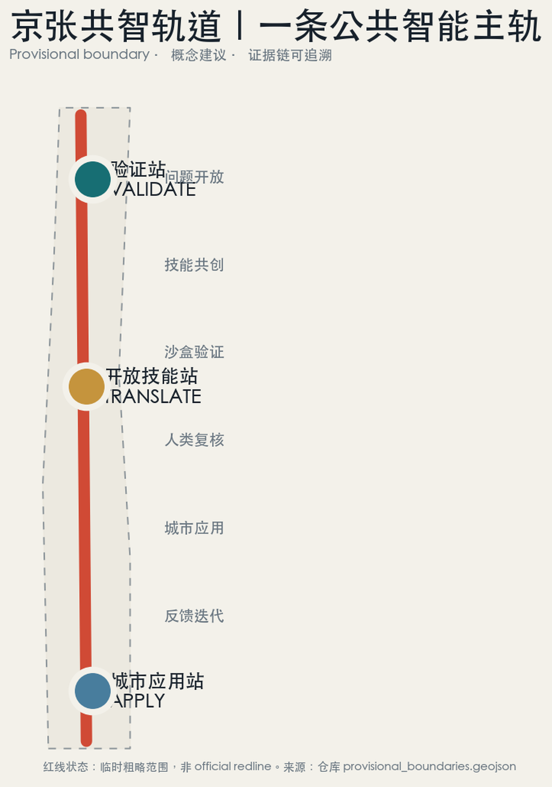
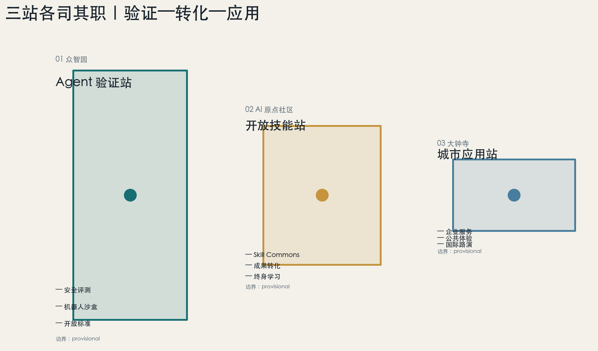
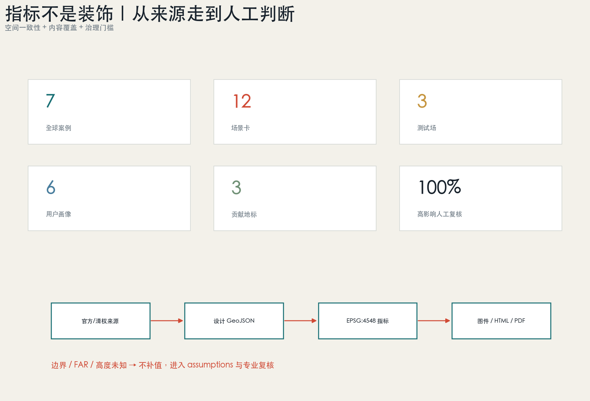

11,412,825
平方米 provisional site 复算
让城市经验像铁路一样可连接、可验证、可迭代。验证站、开放技能站、城市应用站共同组成 Civic Agent OS。
OpenAI Codex × GitHub @abakane1 · v1.0 · 2026-08-07

完成率、伤害、成本三维评测；安全红队与低速机器人沙盒。
把成果炼成有来源、有边界、有维护者的公共 Skill。
企业服务、公众体验、国际路演与贡献里程碑。

| 测试场 | 门槛 |
|---|---|
| Agent 可信评测 | 完成率 / 伤害 / 成本 + 专家签署 |
| 机器人跨建筑协同 | 限速 / 围栏 / 安全员 / 随时停机 |
| 公共服务 Skill 红队 | 引用 / 拒答 / 人工升级 / 审计 |
交通慢行与蓝绿公共空间承载低碳算力、开放 Skill、成果转化、教育、医疗导航、企业服务、文化导览、无障碍慢行和活动复核。所有高影响场景保留人工服务与申诉渠道。

容积率、建筑高度、道路红线、拆改留、市政容量、文保控制、公共服务容量。